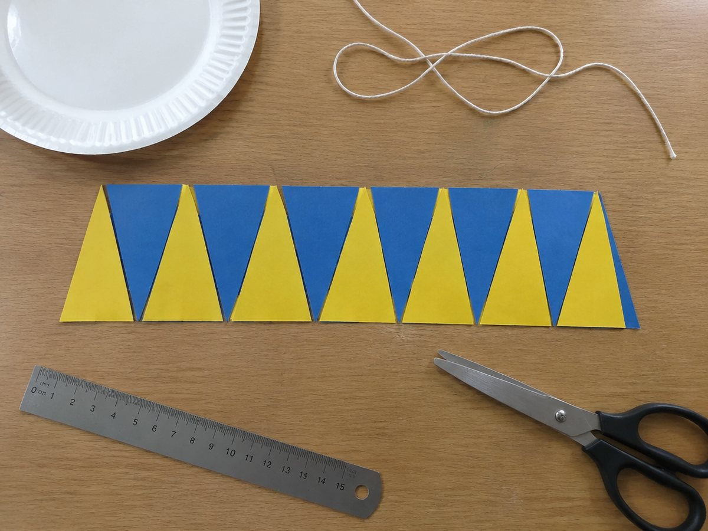

종이접시 원 넓이 직사각형 만들기

원을 16조각으로 잘라 엇갈려 붙이면 직사각형에 가까워져요. 원의 넓이 공식이 어디서 왔는지 손으로 확인해요.
40분 · 난이도 ★★☆ 보통
준비물
- 원 16등분 도안 — 반지름 6cm 원과 붙이기 칸 (A4 2장)
- 종이접시 1장 (선택) — 도안 대신 접어서 써도 돼요
- 실 1m와 자 — 원의 둘레(원주)를 재요
- 가위, 풀, 색연필 — 조각을 잘라 붙여요
하는 방법
- 원주율 재기
종이접시나 동그란 컵 둘레에 실을 감아 길이를 재고, 지름으로 나눠요. 3.1~3.2쯤이 나오나요? 이 값이 원주율(약 3.14)이에요. - 반쪽씩 색칠하기
도안의 원에서 위쪽 반원과 아래쪽 반원을 서로 다른 색으로 칠해요. - 16조각 자르기
중심에서 나가는 선을 따라 16조각으로 잘라요. 피자 조각 같은 모양이 나와요. - 엇갈려 붙이기
도안 2쪽의 붙이기 칸에 한 조각은 뾰족한 쪽이 위, 다음 조각은 아래로 엇갈려 일렬로 붙여요. 직사각형에 가까운 모양이 돼요. - 가로와 세로 찾기
세로는 반지름(6cm), 가로는 원주의 반(6 × 2 × 3.14 ÷ 2 = 18.84cm)이에요. 둘을 곱하면 원의 넓이예요. - 공식으로 확인하기
반지름 × 반지름 × 3.14 = 6 × 6 × 3.14 = 113.04cm². 모눈 칸 세기와도 비교해요.
생각해 봐요
- 실로 잰 원주율이 정확히 3.14가 나오지 않는 이유는 무엇일까요?
- 조각을 더 많이 자르면 모양이 어떻게 달라질까요?
- 반지름이 2배가 되면 넓이는 몇 배가 될까요?
왜 그럴까?
원을 아주 잘게 잘라 엇갈려 붙이면 직사각형에 점점 가까워져요. 이 직사각형의 세로는 원의 반지름, 가로는 원 둘레의 절반이에요. 그래서 원의 넓이는 반지름 × 반지름 × 3.14로 구할 수 있어요. 어떤 원이든 둘레를 지름으로 나누면 약 3.14가 나오는데, 이 값을 원주율이라고 해요.
학교 교육과정 연결
- [6수03-16] 원주와 원의 넓이를 구하는 방법을 이해하고, 이를 구할 수 있다.